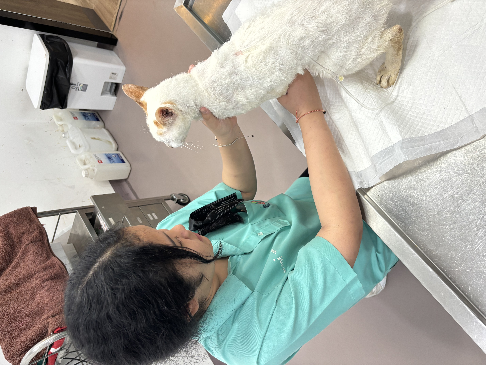

MY INTEREST

ฉันมีความสนใจศึกษาต่อใน คณะสัตวแพทยศาสตร์ เนื่องจากเป็นสาขาที่ได้เรียนรู้เกี่ยวกับสัตว์ ทั้งด้านร่างกาย สุขภาพ การป้องกันโรค และการรักษาสัตว์
ฉันชอบสัตว์และสนใจการดูแลสัตว์ จึงอยากพัฒนาความรู้และทักษะของตนเอง เพื่อนำไปต่อยอดสู่การศึกษาต่อ และประกอบอาชีพในอนาคต